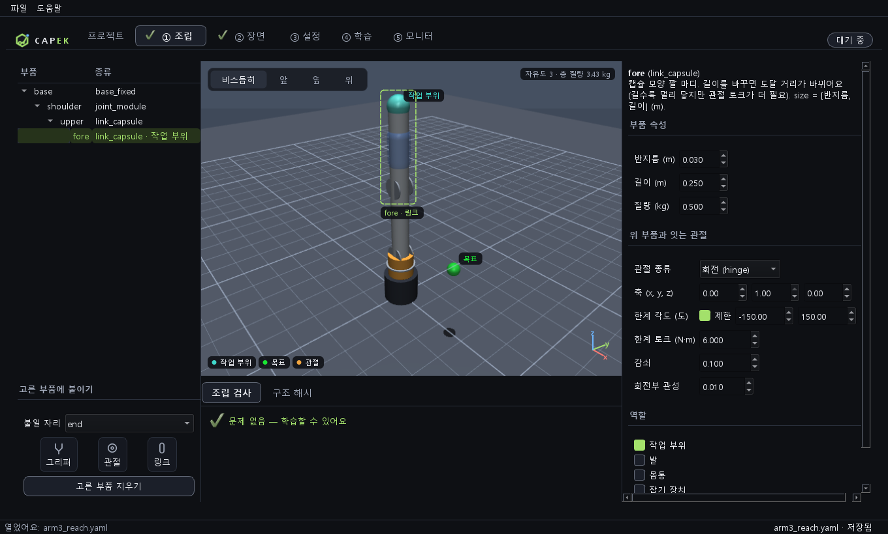
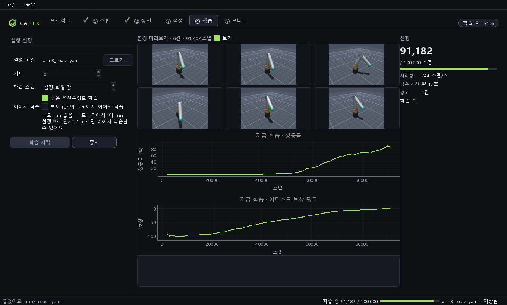
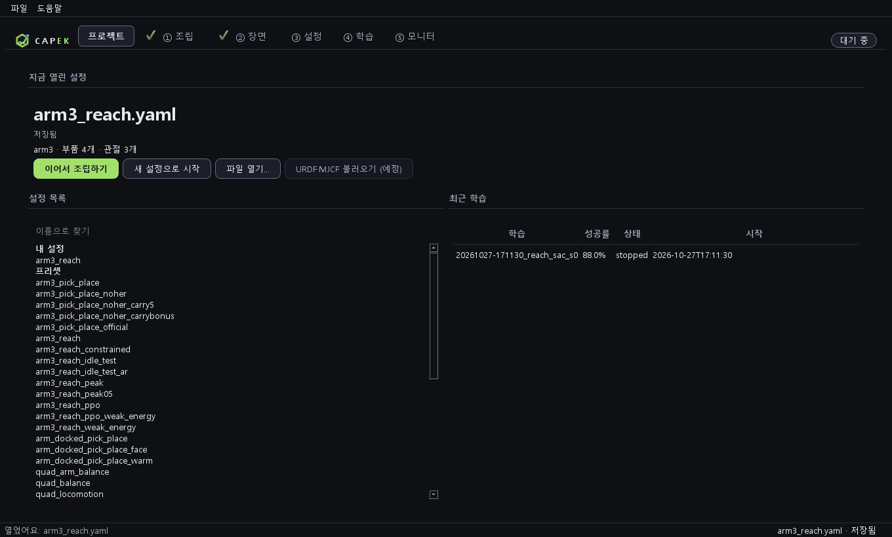
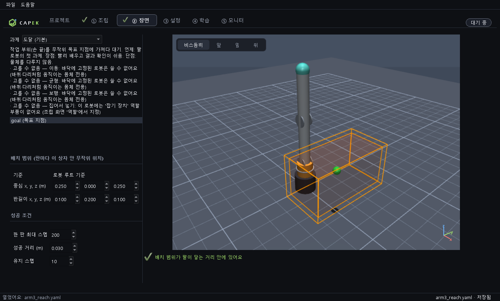

로봇을 조립하고,
학습시키세요.
부품을 이어 붙여 로봇을 만들고, 강화학습으로 과제를 달성시키는 샌드박스. 파이썬도 GPU도 필요 없어요.
CAPEK-Setup.exe 내려받기 기능 보기
할 수 있는 일
🧩 조립
링크·관절·바퀴·다리·그리퍼를 카드로 이어 붙이고 3D로 확인해요. 고른 부품은 점선 상자로, 작업 부위와 목표는 이름표로 보여요. 잘못 붙이면 이유를 알려 줘요.
🏠 프로젝트
첫 화면에서 설정과 최근 학습을 고르고, 새 조립을 시작해요.
🎯 과제
팔 뻗기, 이동, 균형, 걷기, 집어서 옮기기. 배치 범위와 성공 조건을 정해요.
📈 학습
버튼 하나로 강화학습을 시작해요. 진행 패널과 곡선, 병렬 환경 미리보기가 실시간으로 움직이고 창을 닫아도 계속돼요.
🗂 모니터
학습 기록을 모아 비교하고, 설정이 어디가 달라졌는지 봐요.
🎬 3D 재생
끝난 학습을 3D로 다시 봐요.
🩺 자동 진단
학습이 막히면 원인 후보를 알려 주고, 안전한 것은 스스로 고쳐요.
🤖 AI 조언 (선택)
분석가 2명이 따로 기록을 보고, 의견이 같은 것만 제안해요. 적용은 내가 확인한 뒤에만.
💾 내 PC에 저장
모든 기록은 문서\CAPEK에 저장돼요.



설치
- Releases에서
CAPEK-Setup.exe를 내려받아요. - 더블클릭해서 설치해요.
- "알 수 없는 게시자" 경고가 뜨면 추가 정보 → 실행을 눌러요. 코드 서명이 아직 없어요.
- 시작 메뉴에서 CAPEK을 열어요.
메모리 8 GB 이상 권장 · 디스크 약 1 GB · 제거해도 학습 기록(문서\CAPEK)은 남아요.
개인정보와 데이터
학습, 조립, 재생은 모두 이 PC 안에서 돌아요. 인터넷은 AI 조언을 쓸 때만 써요. 그때 학습 설정과 지표 요약만 Anthropic으로 전송되고, 파일 경로와 API 키는 보내지 않아요. 비용은 본인의 API 계정에 청구되고, 호출 전에 예상 비용을 확인받아요.